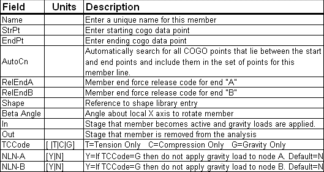

Input Miscellaneous Member
A Miscellaneous member has the special feature of Gravity Only. If the TCCode is set to G, then this member will NOT be used in the stiffness matrix for the finite element analysis. Its gravity effects will be distributed to the nodes of the connecting members that are used in the matrix. This feature is useful for large truss analysis where the bracing member dead load is difficult to calculate, but using the bracing members in the analysis complicates member end boundary conditions and leads to a very complex and unstable model. This feature allows you to model the Miscellaneous members as you normally would, but then not be concerened with adjusting their stiffness effects in the model. Please see the graphic below. The removal of bracing members might require that the top cords of truss models be constrained in the Z-direction.
The No-Load-Node, NLN, options for the A and B nodes is a further refinement that allows you to direct the program to not apply the gravity members load directly at the connected nodes, but distribute it to the next available “real” members. This is useful where the gravity only member ties into a real member, such as a diagonal or horizontal truss member, and the effect of a point load in the direction of gravity at that connecting point is not desired.